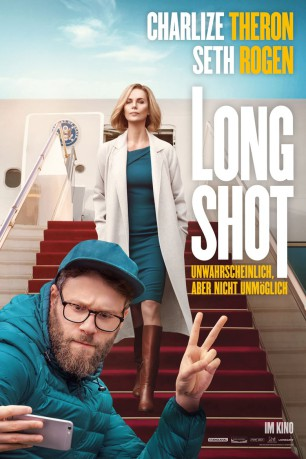

#11946 Long Shot - Unwahrscheinlich, aber nicht unmöglich
Alternativ: Long Shot (Englischer Titel)
 
 IMDB-Wertung: 6.9 / 10
IMDB-Wertung: 6.9 / 10  Tomatometer: 81
Tomatometer: 81  Metascore: 67
Metascore: 67 
Der arbeitslose Journalist Fred Flarsky (Seth Rogen) sieht nach langer Zeit seine erste große Liebe (aber auch ehemalige Babysitterin) Charlotte Field (Charlize Theron) wieder. Nun ist sie als Außenministerin der Vereinigten Staaten von Amerika eine der einflussreichsten Frauen der Welt und hat sogar vor, als Präsidentin der USA zu kandidieren. Fred ist zwar ein durchaus talentierter Journalist mit einem leichten Hang zum Chaos, doch Charlotte ist als intelligente, gebildete und versierte Frau das komplette Gegenteil von ihm. Obwohl die beiden bis auf ihre Vergangenheit nichts miteinander verbindet, stellt Charlotte ihn kurzerhand als ihren Redenschreiber ein. In ihrem Team, das nur aus den Besten der Besten ihrer Zunft besteht, ist er somit ein Frischling. Doch Fred hat ganz andere Probleme: Wie kann er es als ausgewiesener Nerd schaffen, eine so unglaublich elegante Frau zu beeindrucken? Und ist es überhaupt so eine gute Idee, ein Verhältnis mit Charlotte anzufangen?
Jahr: 2019
Dauer: 125 Minuten
FSK: 12
Land: USA Studio: Summit EntertainmentTonspuren: DTS - ,
Untertitel: Deutsch,
Auflösung: 1080p (1920x808) Größe: 7874 MB
Genre: Komödie, Liebe
Regisseur: Jonathan Levine
Drehbuch: Dan Sterling, Liz Hannah, Dan Sterling
Soundtrack: Marco Beltrami, Miles Hankins
Darsteller:
 Charlize Theron als Charlotte Field
Charlize Theron als Charlotte Field Seth Rogen als Fred Flarsky
Seth Rogen als Fred Flarsky June Diane Raphael als Maggie Millikin
June Diane Raphael als Maggie Millikin O'Shea Jackson Jr. als Lance
O'Shea Jackson Jr. als Lance Ravi Patel als Tom
Ravi Patel als Tom Bob Odenkirk als President Chambers
Bob Odenkirk als President Chambers Andy Serkis als Parker Wembley
Andy Serkis als Parker Wembley Randall Park als Boss
Randall Park als Boss Tristan D. Lalla als Agent M
Tristan D. Lalla als Agent M Alexander Skarsgård als Prime Minister James Steward
Alexander Skarsgård als Prime Minister James Steward- Aladeen Tawfeek als Bharath
- Wanya Morris als Wanya Morris
- Shawn Stockman als Shawn Stockman
- Aviva Mongillo als Young Charlotte
- Braxton Herda als Young Fred
- Anton Koval als Alt-Right Leader
 Marcel Jeannin als CNS News Anchor
Marcel Jeannin als CNS News Anchor Lisa Kudrow als Katherine
Lisa Kudrow als Katherine- Kurt Braunohler als Wembley News Anchor #1
 Paul Scheer als Wembley News Anchor #2
Paul Scheer als Wembley News Anchor #2 Claudia O'Doherty als Wembley News Anchor #3
Claudia O'Doherty als Wembley News Anchor #3- James Hicks als Boyfriend
 Daniel Rindress-Kay als LT. Gary Smith
Daniel Rindress-Kay als LT. Gary Smith- Ivan Smith als Indian Prime Minister
 Sean Tucker als Aryan Grande
Sean Tucker als Aryan Grande- Kara Raposo als Little Girl on TV
- Lil Yachty als Lil Yachty
 Frank Schorpion als TV General
Frank Schorpion als TV General- Sean Curley als Tad
- Johnny Cortes als Bartender
 Holden Wong als Secretary of State Staffer
Holden Wong als Secretary of State Staffer- Chris Cavener als Juggalo (uncredited)
- George Chiang als Chinese President Wu (uncredited)
- Gabrielle Graham als Franci (uncredited)
- Hamza Haq als MSNBC Anchor (uncredited)
- Scott Humphrey als Wembly's Assistant (uncredited)
- Garett Pringle als White House Staff (uncredited)
- Veronique Senosier Roberge als News Reporter (uncredited)
 James Saito als Minister Kishido (uncredited)
James Saito als Minister Kishido (uncredited)- Xiao Sun als Mrs. Lin (uncredited)
 Nathaly Thibault als Swedish Delegate (uncredited)
Nathaly Thibault als Swedish Delegate (uncredited)- Jonathan Vanderzon als Douchebag Speechwriter (uncredited)
- Nathan Morris als Nathan Morris
- Isla Dowling als Katarina Prudence Wembley
- Marc Rowland als Movement Coach
- John Robinson als Commander
- Aalia Adam als Anchor on Tarmac
- Lucy Van Oldenbarneveld als BCNMS News Anchor
- Julie Roussel als French TV Reporter
 Brett Watson als Alt-Right Guy #2
Brett Watson als Alt-Right Guy #2
Datei: X:\2019(G-M)\Long Shot - Unwahrscheinlich, aber nicht unmöglich (2019, FSK12, 1920x808).mkv seit 26.10.2019
Festplatte: HD 2018(G-Z)-2019(A-Z)
 Es gibt insgesamt 47 Filme in der Gruppe '2019(G-M)'
Es gibt insgesamt 47 Filme in der Gruppe '2019(G-M)'